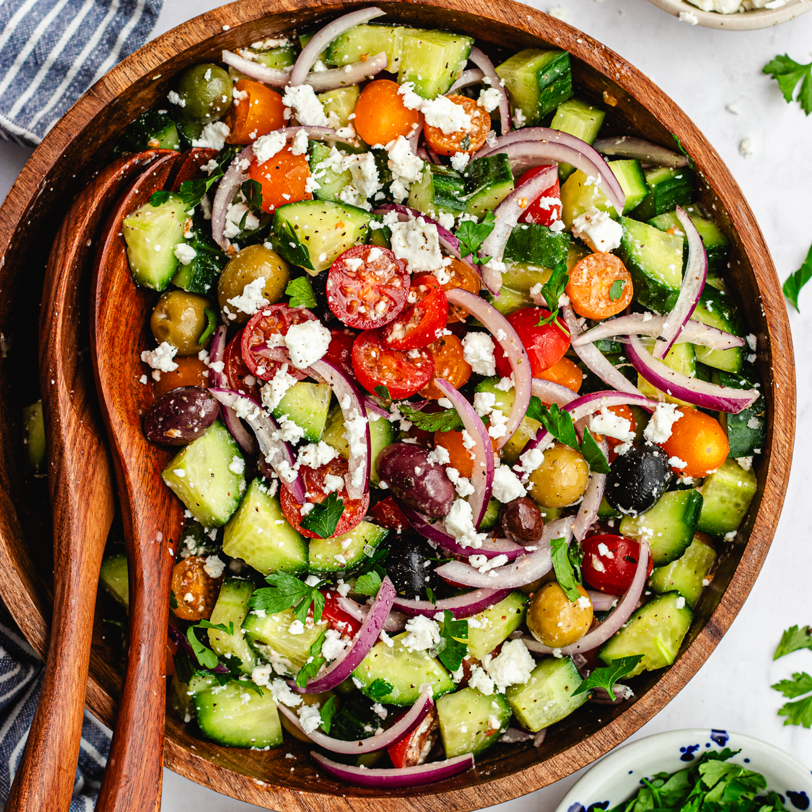

Prepare the vegetables: Slice the cucumber into thin rounds. Chop the tomatoes into bite-sized pieces. Thinly slice the red onion.
Combine in a bowl: Add the cucumber, tomato, and onion to a large mixing bowl.
Season: Sprinkle salt, black pepper, and garlic powder over the vegetables.
Mix well: Toss everything together until evenly coated.
Let it sit (optional): For better flavor, let the salad sit for 10-15 minutes before serving to allow the seasonings to absorb.
